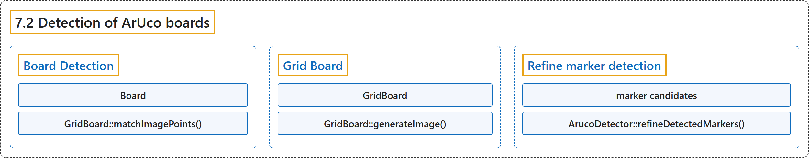

7.2 Detection of ArUco boards
Classification

Glossary
| Term | Definition | 中文翻译 | Source |
|---|---|---|---|
| 7.2 Detection of ArUco boards ArUco 标定板检测 |
"An ArUco board is a set of markers that acts like a single marker in the sense that it provides a single pose for the camera." | ArUco 标定板是一组标记，它像单个标记一样，为相机提供单一的位姿。 | OpenCV team, n.d., "Detection of ArUco boards", para. 1 |
| Board Detection 标定板检测 |
"A board detection is similar to the standard marker detection. The only difference is in the pose estimation step." | 标定板检测与标准的标记检测类似。唯一的区别在于位姿估计这一步。 | OpenCV team, n.d., "Board Detection", para. 1 |
| Board Board 类 |
"board the cv::aruco::Board object that defines the board layout and its ids" | board：cv::aruco::Board 对象，它定义标定板的布局及其 id | OpenCV team, n.d., "Board Detection", item 2 |
| GridBoard::matchImagePoints() matchImagePoints 方法 |
(context) "objPoints, imgPoints object and image points, matched with cv::aruco::GridBoard::matchImagePoints()" | （语境）objPoints、imgPoints：物点和像点，由 cv::aruco::GridBoard::matchImagePoints() 匹配得到 | OpenCV team, n.d., "Board Detection", item 1 |
| Grid Board 网格标定板 |
(No definition) | （无定义） | OpenCV team, n.d., "Grid Board" |
| GridBoard GridBoard 类 |
"The cv::aruco::GridBoard class is a specialized class that inherits from the cv::aruco::Board class and which represents a Board with all the markers in the same plane and in a grid layout" | cv::aruco::GridBoard 类是一个继承自 cv::aruco::Board 类的专用类，表示所有标记位于同一平面并呈网格布局的标定板 | OpenCV team, n.d., "Grid Board", para. 3 |
| GridBoard::generateImage() generateImage 方法 |
(context) "The function cv::aruco::GridBoard::generateImage() is provided in cv::aruco::GridBoard class" | （语境）函数 cv::aruco::GridBoard::generateImage() 由 cv::aruco::GridBoard 类提供 | OpenCV team, n.d., "Grid Board", para. 1 |
| Refine marker detection 细化标记检测 |
"ArUco boards can also be used to improve the detection of markers." | ArUco 标定板还可以用来改进标记的检测。 | OpenCV team, n.d., "Refine marker detection", para. 1 |
| marker candidates 候选标记 |
"This candidates are square shapes that have been found in the original image but have failed to pass the identification step" | 这些候选是在原图像中找到、但没有通过识别步骤的方形 | OpenCV team, n.d., "Refine marker detection", para. 4 |
| ArucoDetector::refineDetectedMarkers() refineDetectedMarkers 方法 |
"The cv::aruco::ArucoDetector::refineDetectedMarkers() function finds correspondences between these candidates and the missing markers of the board." | cv::aruco::ArucoDetector::refineDetectedMarkers() 函数在这些候选与标定板上缺失的标记之间寻找对应关系。 | OpenCV team, n.d., "Refine marker detection", para. 5 |
References
OpenCV team. (n.d.). Detection of ArUco boards. OpenCV-Python Tutorials (Version 4.13.0). Retrieved October 31, 2026, from https://docs.opencv.org/4.x/db/da9/tutorial_aruco_board_detection.html